Worldview description: As birth rates decline, a revolutionary surrogacy device has emerged and quickly gained popularity, fulfilling the demand for "high-quality parenting," "pain-free pregnancy," and "marriage-free reproduction." As this technology sweeps through society, it is fundamentally reshaping social structures—marriage is no longer a prerequisite for childbirth, as reproduction no longer depends on traditional male-female unions. Individuals only need to extract their sperm or eggs, place them in a commercialized surrogacy device in advance, and nurture their child from an embryo to full development. Moreover, they can choose the timing of the embryo's growth, everything is highly controlled technically.
What's next? 1. The program's failure gave rise to an embryo that sought to break out on its own, but this very act led to its demise； 2. A customization and control app for embryos and children turns the traditional parent-child relationship into a virtual pet-like upbringing； 3. A series of marketing and promotional campaigns surrounding this product.
1. In the beginning, I created an X-Y axis chart reflecting my worldview, where I leaned toward techno-control and consumerism.
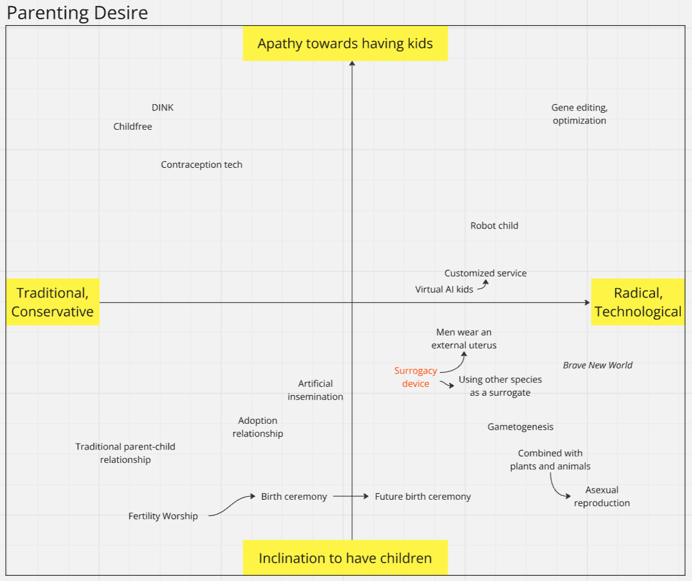2. This is a sketch of my concept. I find the shape of an egg carton quite interesting, which led me to associate it with ideas like genetic chains, circuits, and factories.
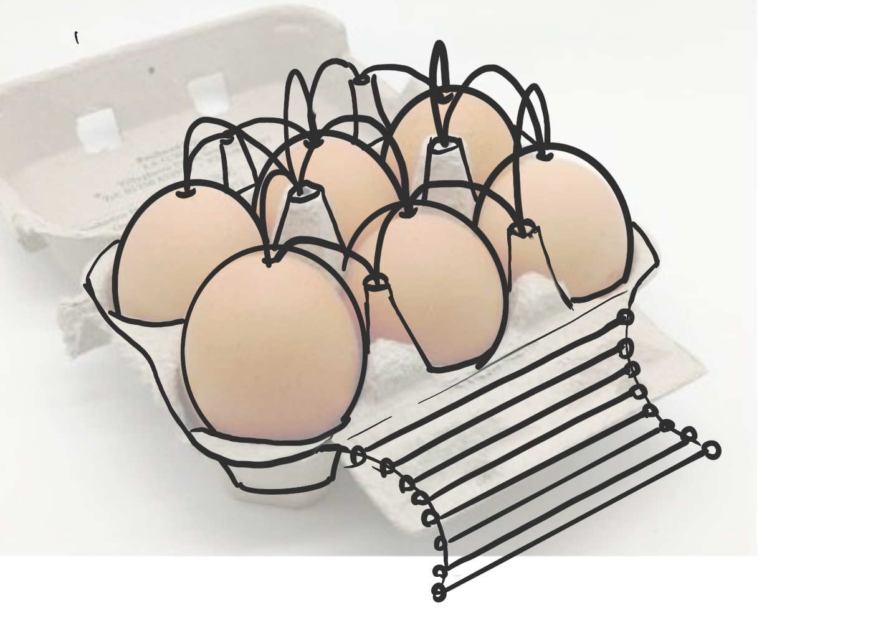3. Additionally, I think elements like balloons, pills, the world tree, and capsule toy machines also have a lot of potential, although I didn’t using them finally.
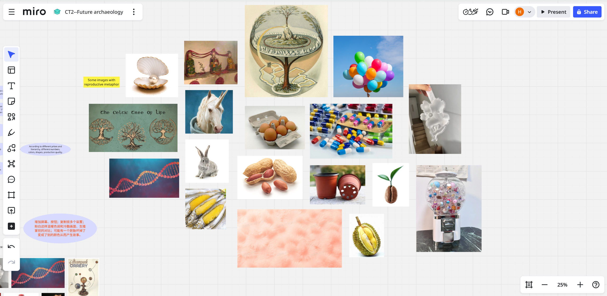4. As I moved into the modeling stage, I initially wanted to build the main foundation first, then transform the inward-pressed square holes into circular ones. However, I soon realized this approach was impractical, as it would make the later steps much more complicated.
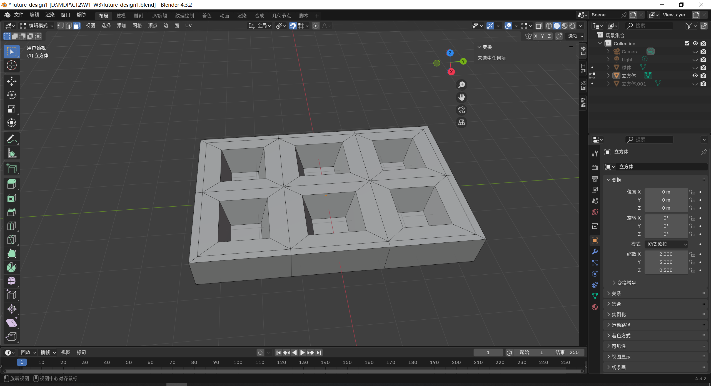 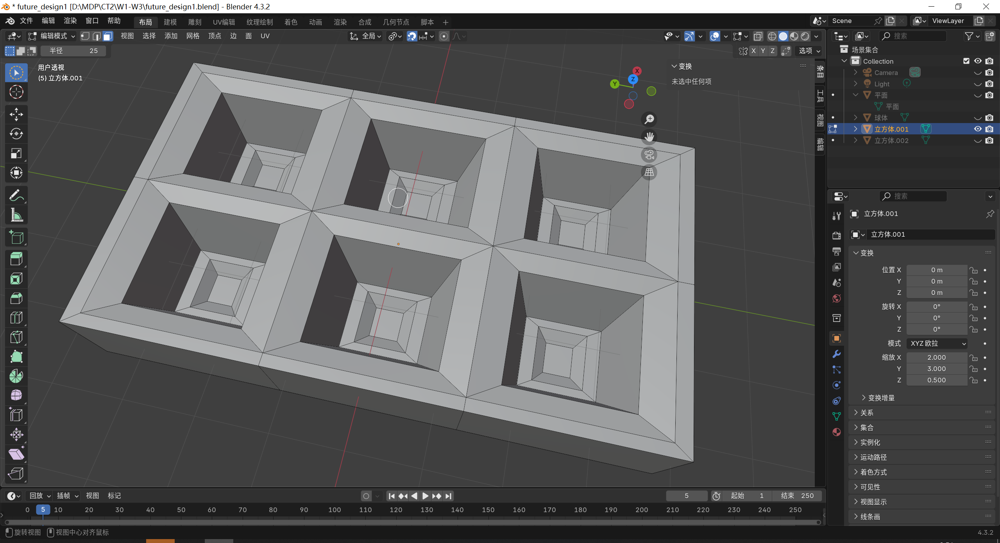5. So I rebuilt the model, starting with a single unit that had an inward-pressed hole, then duplicated it and connected the units together.
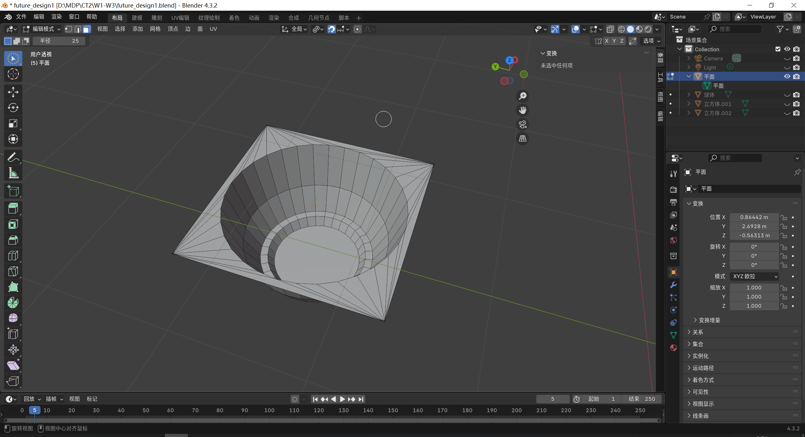 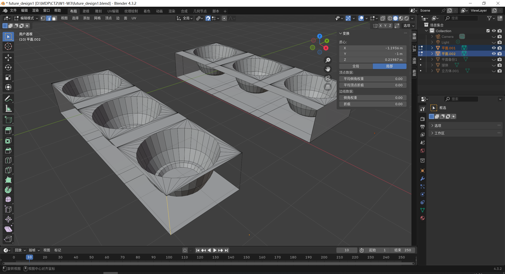6. I added more details and left space between different units because I needed to build tower-like structures between them. I figured the most convenient way to do this was by extruding square faces upward.
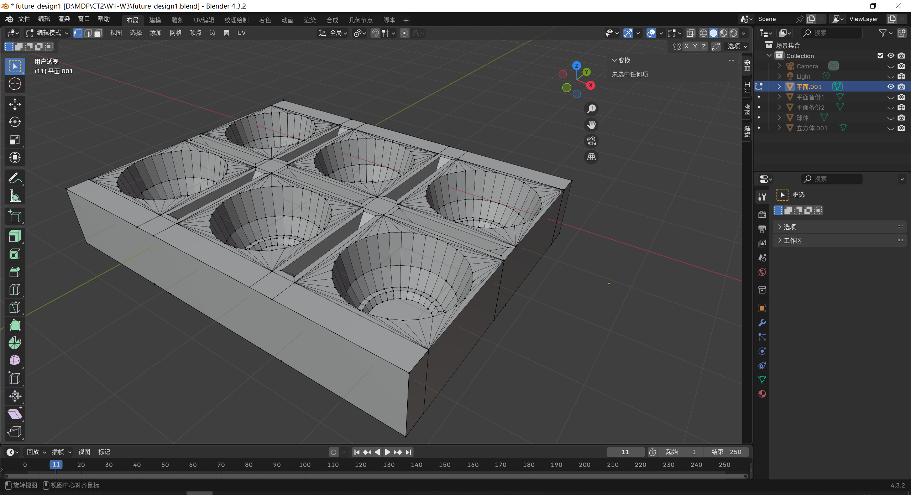7. Then I began modeling the “embryos” and babies. I didn’t add too much internal detail to the babies, since they would appear somewhat hazy from the outside. During this stage, I repeatedly adjusted the materials to achieve the effect I was aiming for.
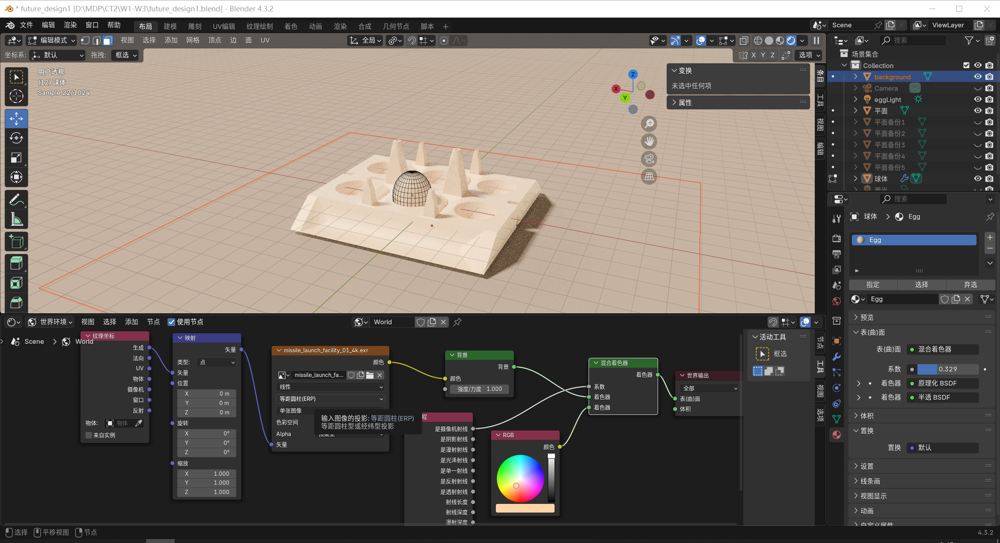 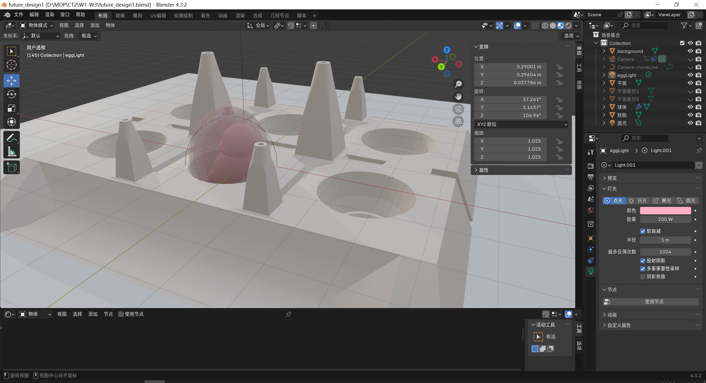8. Lastly, I worked on adjusting and testing the lighting and camera angles. I aimed to create a contrast where the pink embryos appear full of human warmth within a pure white world, yet are in fact being coldly replicated and commercialized.
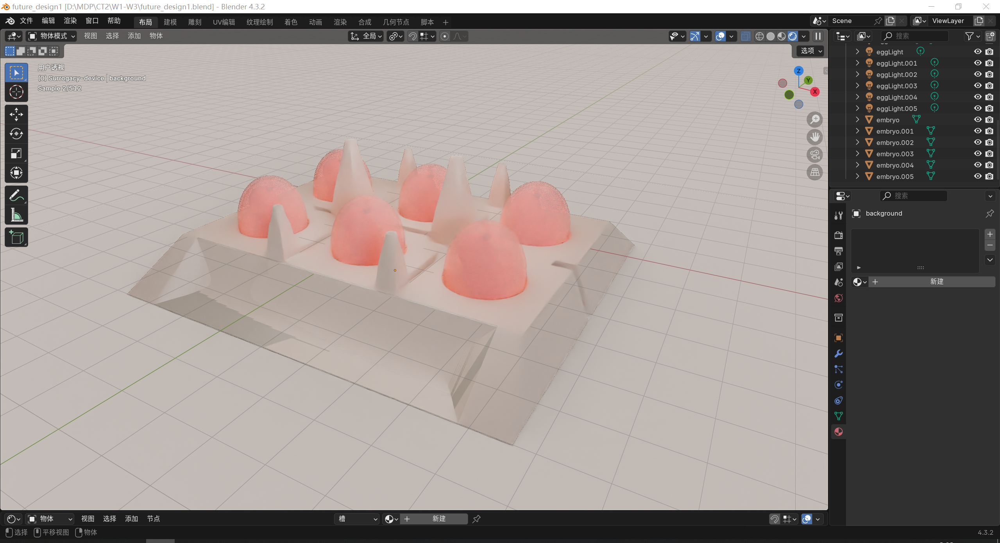